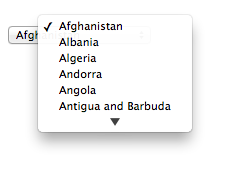
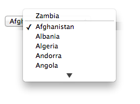

name attributedirname attributemaxlength attributeminlength attributedisabled attributeMost form controls have a value and a checkedness. (The latter is only used by input
elements.) These are used to describe how the user interacts with the control.
A control's value is its internal state. As such, it might not match the user's current input.
For instance, if a user enters the word "three" into a numeric field that expects digits, the user's input would
be the string "three" but the control's value would remain
unchanged. Or, if a user enters the email address " awesome@example.com"
(with leading whitespace) into an email field, the
user's input would be the string " awesome@example.com" but the browser's UI for
email fields might translate that into a value of "awesome@example.com" (without the leading whitespace).
input
and textarea elements have a dirty value flag.
This is used to track the interaction between the value and
default value. If it is false, value mirrors the default
value. If it is true, the default value is ignored.
Some form controls also have an optional value. This largely mirrors the value but doesn't normalize to an empty string. This ought to be used sparingly, you generally want value.
input, textarea, and select elements have a
user validity boolean. It is initially set to false.
To define the behavior of constraint validation in the face of the input
element's multiple attribute, input elements
can also have separately defined values.
To define the behavior of the maxlength and minlength attributes, as well as other APIs specific to the
textarea element, all form control with a value also have an algorithm for obtaining an API value. By
default this algorithm is to simply return the control's value.
The select element does not have a value;
the selectedness of its option
elements is what is used instead.
A form control can be designated as mutable.
This determines (by means of definitions and requirements in this specification that rely on whether an element is so designated) whether or not the user can modify the value or checkedness of a form control, or whether or not a control can be automatically prefilled.
A form-associated element can have a relationship with a form
element, which is called the element's form
owner. If a form-associated element is not associated with a form
element, its form owner is said to be null.
A form-associated element has an associated parser inserted flag.
A form-associated element is, by default, associated with its nearest ancestor form element (as described
below), but, if it is listed, may have a form attribute specified to override this.
This feature allows authors to work around the lack of support for nested
form elements.
If a listed form-associated element has a
form attribute specified, then that attribute's value must be
the ID of a form element in the element's
tree.
The rules in this section are complicated by the fact that although conforming
documents or trees will never contain nested form
elements, it is quite possible (e.g., using a script that performs DOM manipulation) to generate
trees that have such nested elements. They are also complicated by
rules in the HTML parser that, for historical reasons, can result in a form-associated
element being associated with a form element that is not its ancestor.
When a form-associated element is created, its form owner must be initialized to null (no owner).
When a form-associated element is to be associated with a form, its form owner must be set to that form.
When a listed form-associated element's
form attribute is set, changed, or removed, then the user
agent must reset the form owner of that element.
When a listed form-associated element has a
form attribute and the ID of
any of the elements in the tree changes, then the user agent must reset the
form owner of that form-associated element.
When a listed form-associated element has a
form attribute and an element with an ID is inserted
into or removed from the
Document, or its HTML element moving steps are run, then the user agent
must reset the form owner of that form-associated element.
The form owner is also reset by the HTML element insertion steps, HTML element removing steps, and HTML element moving steps.
To reset the form owner of a form-associated element element:
Unset element's parser inserted flag.
If all of the following are true:
element's form owner is not null;
element is not listed or its form content attribute is not present; and
element's form owner is its nearest form element
ancestor after the change to the ancestor chain,
then return.
Set element's form owner to null.
If element is listed, has a form content attribute, and is connected, then:
If the first element in element's tree, in tree
order, to have an ID that is identical to
element's form content attribute's value, is a
form element, then associate the
element with that form element.
Otherwise, if element has an ancestor form element, then associate element with the nearest such
ancestor form element.
In the following non-conforming snippet
...
<form id="a">
<div id="b"></div>
</form>
<script>
document.getElementById('b').innerHTML =
'<table><tr><td></form><form id="c"><input id="d"></table>' +
'<input id="e">';
</script>
...the form owner of "d" would be the inner nested form "c", while the form owner of "e" would be the outer form "a".
This happens as follows: First, the "e" node gets associated with "c" in the HTML
parser. Then, the innerHTML algorithm moves the nodes
from the temporary document to the "b" element. At this point, the nodes see their ancestor chain
change, and thus all the "magic" associations done by the parser are reset to normal ancestor
associations.
This example is a non-conforming document, though, as it is a violation of the content models
to nest form elements, and there is a parse error for the </form> tag.
element.formReturns the element's form owner.
Returns null if there isn't one.
Listed form-associated elements except for form-associated custom elements have a form IDL attribute, which, on getting, must return the
element's form owner, or null if there isn't one.
Form-associated custom elements don't have
form IDL attribute. Instead, their
ElementInternals object has a form IDL attribute. On getting, it must throw a
"NotSupportedError" DOMException if the target element is not a form-associated custom
element. Otherwise, it must return the element's form owner, or null if there
isn't one.
name attributeThe name content attribute gives the name of the form control, as
used in form submission and in the form element's elements object. If the attribute is specified, its value must
not be the empty string or isindex.
A number of user agents historically implemented special support for first-in-form
text controls with the name isindex, and this specification previously
defined related user agent requirements for it. However, some user agents subsequently dropped
that special support, and the related requirements were removed from this specification. So, to
avoid problematic reinterpretations in legacy user agents, the name isindex
is no longer allowed.
Other than isindex, any non-empty value for name is allowed. An ASCII case-insensitive match for
the name _charset_ is special: if used as
the name of a Hidden control with no value attribute, then during submission the value attribute is automatically given a value consisting of the
submission character encoding.
DOM clobbering is a common cause of security issues. Avoid using the names of
built-in form properties with the name content attribute.
In this example, the input element overrides the built-in method property:
let form = document.createElement("form");
let input = document.createElement("input");
form.appendChild(input);
form.method; // => "get"
input.name = "method"; // DOM clobbering occurs here
form.method === input; // => trueSince the input name takes precedence over built-in form properties, the JavaScript reference
form.method will point to the input element named "method"
instead of the built-in method property.
dirname attributeThe dirname
attribute on a form control element enables the submission of the directionality of
the element, and gives the name of the control that contains this value during form
submission. If such an attribute is specified, its value must not be the empty string.
In this example, a form contains a text control and a submission button:
<form action="addcomment.cgi" method=post>
<p><label>Comment: <input type=text name="comment" dirname="comment.dir" required></label></p>
<p><button name="mode" type=submit value="add">Post Comment</button></p>
</form>When the user submits the form, the user agent includes three fields, one called "comment", one called "comment.dir", and one called "mode"; so if the user types "Hello", the submission body might be something like:
comment=Hello&comment.dir=ltr&mode=add
If the user manually switches to a right-to-left writing direction and enters "مرحبا", the submission body might be something like:
comment=%D9%85%D8%B1%D8%AD%D8%A8%D8%A7&comment.dir=rtl&mode=add
maxlength attributeA form
control maxlength attribute, controlled by the dirty value flag, declares a limit on the number of characters a
user can input. The number of characters is measured using length and, in the case
of textarea elements, with all newlines normalized to a single character (as opposed
to CRLF pairs).
If an element has its form control maxlength attribute specified, the attribute's value must be a valid
non-negative integer. If the attribute is specified and applying the rules for
parsing non-negative integers to its value results in a number, then that number is the
element's maximum allowed value length. If the attribute is omitted or parsing its
value results in an error, then there is no maximum allowed value length.
Constraint validation: If an element has a maximum allowed value length, its dirty value flag is true, its value was last changed by a user edit (as opposed to a change made by a script), and the length of the element's API value is greater than the element's maximum allowed value length, then the element is suffering from being too long.
User agents may prevent the user from causing the element's API value to be set to a value whose length is greater than the element's maximum allowed value length.
In the case of textarea elements, the API value and value
differ. In particular, newline normalization is applied
before the maximum allowed value length is checked (whereas the textarea
wrapping transformation is not applied).
minlength attributeA form
control minlength attribute, controlled by the dirty value flag, declares a lower bound on the number of
characters a user can input. The "number of characters" is measured using length and,
in the case of textarea elements, with all newlines normalized to a single character
(as opposed to CRLF pairs).
The minlength attribute does not imply the
required attribute. If the form control has no required attribute, then the value can still be omitted; the minlength attribute only kicks in once the user has entered a
value at all. If the empty string is not allowed, then the required
attribute also needs to be set.
If an element has its form control minlength attribute specified, the attribute's value must be a valid
non-negative integer. If the attribute is specified and applying the rules for
parsing non-negative integers to its value results in a number, then that number is the
element's minimum allowed value length. If the attribute is omitted or parsing its
value results in an error, then there is no minimum allowed value length.
If an element has both a maximum allowed value length and a minimum allowed value length, the minimum allowed value length must be smaller than or equal to the maximum allowed value length.
Constraint validation: If an element has a minimum allowed value length, its dirty value flag is true, its value was last changed by a user edit (as opposed to a change made by a script), its value is not the empty string, and the length of the element's API value is less than the element's minimum allowed value length, then the element is suffering from being too short.
In this example, there are four text controls. The first is required, and has to be at least 5 characters long. The other three are optional, but if the user fills one in, the user has to enter at least 10 characters.
<form action="/events/menu.cgi" method="post">
<p><label>Name of Event: <input required minlength=5 maxlength=50 name=event></label></p>
<p><label>Describe what you would like for breakfast, if anything:
<textarea name="breakfast" minlength="10"></textarea></label></p>
<p><label>Describe what you would like for lunch, if anything:
<textarea name="lunch" minlength="10"></textarea></label></p>
<p><label>Describe what you would like for dinner, if anything:
<textarea name="dinner" minlength="10"></textarea></label></p>
<p><input type=submit value="Submit Request"></p>
</form>disabled attributeThe disabled content attribute is a boolean
attribute.
The disabled attribute for
option elements and the disabled
attribute for optgroup elements are defined separately.
A form control is disabled if any of the following are true:
the element is a button, input, select,
textarea, or form-associated custom element, and the disabled attribute is specified on this element (regardless of
its value); or
the element is a descendant of a fieldset element whose disabled attribute is specified, and is not a
descendant of that fieldset element's first legend element child, if
any.
A form control that is disabled must prevent any
click events that are queued
on the user interaction task source from being dispatched on the element.
Being disabled does not prevent all modifications to the form control. For example, the control's value or checkedness could be modified programmatically from JavaScript. Or, they could be indirectly modified by user action, e.g., if other non-disabled elements in the control's radio button group were modified.
Constraint validation: If an element is disabled, it is barred from constraint validation.
Attributes for form submission can be specified both on form elements
and on submit buttons (elements that represent buttons
that submit forms, e.g. an input element whose type attribute is in the Submit Button state).
The attributes for form submission that may be specified on form
elements are action, enctype, method, novalidate, and target.
The corresponding attributes for form submission that may be specified on submit buttons are formaction, formenctype, formmethod, formnovalidate, and formtarget. When omitted, they default to the values given on
the corresponding attributes on the form element.
The action and
formaction
content attributes, if specified, must have a value that is a valid non-empty URL
potentially surrounded by spaces.
The action of an element is the value of the element's
formaction attribute, if the element is a submit button and has such an attribute, or the value of its
form owner's action attribute, if it has
one, or else the empty string.
The method and
formmethod
content attributes are enumerated attributes with the
following keywords and states:
| Keyword | State | Brief description |
|---|---|---|
get
| GET | Indicates the form will use the HTTP GET method.
|
post
| POST | Indicates the form will use the HTTP POST method.
|
dialog
| Dialog | Indicates the form is intended to close the dialog box in which
the form finds itself, if any, and otherwise not submit.
|
The method attribute's missing value default and invalid value default
are both the GET state.
The formmethod attribute has no missing value default, and its invalid value
default is the GET state.
The method of an element is one of those states. If the
element is a submit button and has a formmethod attribute, then the element's method is that attribute's state; otherwise, it is the form
owner's method attribute's state.
Here the method attribute is used to explicitly specify
the default value, "get", so that the search
query is submitted in the URL:
<form method="get" action="/search.cgi">
<p><label>Search terms: <input type=search name=q></label></p>
<p><input type=submit></p>
</form>On the other hand, here the method attribute is used to
specify the value "post", so that the user's
message is submitted in the HTTP request's body:
<form method="post" action="/post-message.cgi">
<p><label>Message: <input type=text name=m></label></p>
<p><input type=submit value="Submit message"></p>
</form>In this example, a form is used with a dialog. The method attribute's "dialog" keyword is used to have the dialog
automatically close when the form is submitted.
<dialog id="ship">
<form method=dialog>
<p>A ship has arrived in the harbour.</p>
<button type=submit value="board">Board the ship</button>
<button type=submit value="call">Call to the captain</button>
</form>
</dialog>
<script>
var ship = document.getElementById('ship');
ship.showModal();
ship.onclose = function (event) {
if (ship.returnValue == 'board') {
// ...
} else {
// ...
}
};
</script>The enctype and
formenctype
content attributes are enumerated attributes with the
following keywords and states:
application/x-www-form-urlencoded" keyword and
corresponding state.multipart/form-data" keyword and corresponding
state.text/plain" keyword and corresponding state.The attribute's missing value default and invalid value default are both the application/x-www-form-urlencoded state.
The formenctype attribute has no missing value default, and its invalid value
default is the application/x-www-form-urlencoded state.
The enctype of an element is one of those three states.
If the element is a submit button and has a formenctype attribute, then the element's enctype is that attribute's state; otherwise, it is the
form owner's enctype attribute's state.
The target and
formtarget
content attributes, if specified, must have values that are valid navigable target names or keywords.
The novalidate and formnovalidate content attributes are boolean attributes. If present, they indicate that the form is
not to be validated during submission.
The no-validate state of an element is true if the
element is a submit button and the element's formnovalidate attribute is present, or if the element's
form owner's novalidate attribute is present,
and false otherwise.
This attribute is useful to include "save" buttons on forms that have validation constraints, to allow users to save their progress even though they haven't fully entered the data in the form. The following example shows a simple form that has two required fields. There are three buttons: one to submit the form, which requires both fields to be filled in; one to save the form so that the user can come back and fill it in later; and one to cancel the form altogether.
<form action="editor.cgi" method="post">
<p><label>Name: <input required name=fn></label></p>
<p><label>Essay: <textarea required name=essay></textarea></label></p>
<p><input type=submit name=submit value="Submit essay"></p>
<p><input type=submit formnovalidate name=save value="Save essay"></p>
<p><input type=submit formnovalidate name=cancel value="Cancel"></p>
</form>The action
getter steps are:
If attribute is null or attribute's value is the empty string, then return this's node document's URL.
Let urlString be the result of encoding-parsing-and-serializing a URL given attribute's value, relative to this's node document.
If urlString is not failure, then return urlString.
Return attribute's value, converted to a scalar value string.
The formAction getter steps are:
Let attribute be this's formaction attribute.
If attribute is null or attribute's value is the empty string, then return this's node document's URL.
Let urlString be the result of encoding-parsing-and-serializing a URL given attribute's value, relative to this's node document.
If urlString is not failure, then return urlString.
Return attribute's value, converted to a scalar value string.
The method and
enctype IDL
attributes must reflect the respective content attributes of the same name,
limited to only known values. The encoding IDL attribute must reflect the enctype content attribute, limited to only known
values. The formEnctype IDL attribute must reflect the
formenctype content attribute, limited to only
known values. The formMethod IDL attribute must reflect the
formmethod content attribute, limited to only known
values.
autocomplete attributeUser agents sometimes have features for helping users fill forms in, for example prefilling the
user's address based on earlier user input. The autocomplete content attribute can be used to hint to
the user agent how to, or indeed whether to, provide such a feature.
There are two ways this attribute is used. When wearing the autofill expectation
mantle, the autocomplete attribute describes what
input is expected from users. When wearing the autofill anchor mantle, the autocomplete attribute describes the meaning of the given
value.
On an input element whose type attribute is
in the Hidden state, the autocomplete attribute wears the autofill anchor
mantle. In all other cases, it wears the autofill expectation mantle.
When wearing the autofill expectation mantle, the autocomplete attribute, if specified, must have a value that
is an ordered set of space-separated tokens consisting of either a single token that
is an ASCII case-insensitive match for the string "off", or a single token that is an ASCII
case-insensitive match for the string "on",
or autofill detail tokens.
When wearing the autofill anchor
mantle, the autocomplete attribute, if specified, must have a value that is an ordered set of
space-separated tokens consisting of just autofill detail tokens (i.e. the
"on" and "off" keywords are not allowed).
Autofill detail tokens are the following, in the order given below:
Optionally, a token whose first eight characters are an ASCII case-insensitive
match for the string "section-", meaning that the field belongs to
the named group.
For example, if there are two shipping addresses in the form, then they could be marked up as:
<fieldset>
<legend>Ship the blue gift to...</legend>
<p> <label> Address: <textarea name=ba autocomplete="section-blue shipping street-address"></textarea> </label>
<p> <label> City: <input name=bc autocomplete="section-blue shipping address-level2"> </label>
<p> <label> Postal Code: <input name=bp autocomplete="section-blue shipping postal-code"> </label>
</fieldset>
<fieldset>
<legend>Ship the red gift to...</legend>
<p> <label> Address: <textarea name=ra autocomplete="section-red shipping street-address"></textarea> </label>
<p> <label> City: <input name=rc autocomplete="section-red shipping address-level2"> </label>
<p> <label> Postal Code: <input name=rp autocomplete="section-red shipping postal-code"> </label>
</fieldset>Optionally, a token that is an ASCII case-insensitive match for one of the following strings:
shipping", meaning the field is part of the
shipping address or contact information
billing", meaning the field is part of the
billing address or contact information
Either of the following two options:
A token that is an ASCII case-insensitive match for one of the following autofill field names, excluding those that are inappropriate for the control:
name"
honorific-prefix"
given-name"
additional-name"
family-name"
honorific-suffix"
nickname"
username"
new-password"
current-password"
one-time-code"
organization-title"
organization"
street-address"
address-line1"
address-line2"
address-line3"
address-level4"
address-level3"
address-level2"
address-level1"
country"
country-name"
postal-code"
cc-name"
cc-given-name"
cc-additional-name"
cc-family-name"
cc-number"
cc-exp"
cc-exp-month"
cc-exp-year"
cc-csc"
cc-type"
transaction-currency"
transaction-amount"
language"
bday"
bday-day"
bday-month"
bday-year"
sex"
url"
photo"
(See the table below for descriptions of these values.)
The following, in the given order:
Optionally, a token that is an ASCII case-insensitive match for one of the following strings:
home", meaning the field is for contacting
someone at their residence
work", meaning the field is for contacting
someone at their workplace
mobile", meaning the
field is for contacting someone regardless of location
fax", meaning the field describes a fax
machine's contact details
pager", meaning the field describes a
pager's or beeper's contact details
A token that is an ASCII case-insensitive match for one of the following autofill field names, excluding those that are inappropriate for the control:
tel"
tel-country-code"
tel-national"
tel-area-code"
tel-local"
tel-local-prefix"
tel-local-suffix"
tel-extension"
email"
impp"
(See the table below for descriptions of these values.)
Optionally, a token that is an ASCII case-insensitive match for the string
"webauthn", meaning the user agent
should show public key credentials available via
conditional mediation when the user interacts with the
form control. webauthn is only valid for
input and textarea elements.
As noted earlier, the meaning of the attribute and its keywords depends on the mantle that the attribute is wearing.
The "off" keyword indicates either that the control's
input data is particularly sensitive (for example the activation code for a nuclear weapon); or
that it is a value that will never be reused (for example a one-time-key for a bank login) and
the user will therefore have to explicitly enter the data each time, instead of being able to
rely on the UA to prefill the value for them; or that the document provides its own autocomplete
mechanism and does not want the user agent to provide autocompletion values.
The "on" keyword indicates that the user agent is
allowed to provide the user with autocompletion values, but does not provide any further
information about what kind of data the user might be expected to enter. User agents would have
to use heuristics to decide what autocompletion values to suggest.
The autofill field listed above indicate that the user agent is allowed to provide the user with autocompletion values, and specifies what kind of value is expected. The meaning of each such keyword is described in the table below.
If the autocomplete attribute is omitted, the default
value corresponding to the state of the element's form owner's autocomplete attribute is used instead (either "on" or "off"). If there is no form owner, then the
value "on" is used.
The autofill field listed above indicate that the value of the particular kind of value specified is that value provided for this element. The meaning of each such keyword is described in the table below.
In this example the page has explicitly specified the currency and amount of the transaction. The form requests a credit card and other billing details. The user agent could use this information to suggest a credit card that it knows has sufficient balance and that supports the relevant currency.
<form method=post action="step2.cgi">
<input type=hidden autocomplete=transaction-currency value="CHF">
<input type=hidden autocomplete=transaction-amount value="15.00">
<p><label>Credit card number: <input type=text inputmode=numeric autocomplete=cc-number></label>
<p><label>Expiry Date: <input type=month autocomplete=cc-exp></label>
<p><input type=submit value="Continue...">
</form>The autofill field keywords relate to each other as described in the table below. Each field name
listed on a row of this table corresponds to the meaning given in the cell for that row in the
column labeled "Meaning". Some fields correspond to subparts of other fields; for example, a
credit card expiry date can be expressed as one field giving both the month and year of expiry
("cc-exp"), or as two fields, one giving the
month ("cc-exp-month") and one the year
("cc-exp-year"). In such cases, the names of
the broader fields cover multiple rows, in which the narrower fields are defined.
Generally, authors are encouraged to use the broader fields rather than the narrower fields, as the narrower fields tend to expose Western biases. For example, while it is common in some Western cultures to have a given name and a family name, in that order (and thus often referred to as a first name and a surname), many cultures put the family name first and the given name second, and many others simply have one name (a mononym). Having a single field is therefore more flexible.
Some fields are only appropriate for certain form controls. An autofill field name is inappropriate for a control if the control does not belong to the group listed for that autofill field in the fifth column of the first row describing that autofill field in the table below. What controls fall into each group is described below the table.
| Field name | Meaning | Canonical Format | Canonical Format Example | Control group | |||
|---|---|---|---|---|---|---|---|
"name"
| Full name | Free-form text, no newlines | Sir Timothy John Berners-Lee, OM, KBE, FRS, FREng, FRSA | Text | |||
"honorific-prefix"
| Prefix or title (e.g. "Mr.", "Ms.", "Dr.", "Mlle") | Free-form text, no newlines | Sir | Text | |||
"given-name"
| Given name (in some Western cultures, also known as the first name) | Free-form text, no newlines | Timothy | Text | |||
"additional-name"
| Additional names (in some Western cultures, also known as middle names, forenames other than the first name) | Free-form text, no newlines | John | Text | |||
"family-name"
| Family name (in some Western cultures, also known as the last name or surname) | Free-form text, no newlines | Berners-Lee | Text | |||
"honorific-suffix"
| Suffix (e.g. "Jr.", "B.Sc.", "MBASW", "II") | Free-form text, no newlines | OM, KBE, FRS, FREng, FRSA | Text | |||
"nickname"
| Nickname, screen name, handle: a typically short name used instead of the full name | Free-form text, no newlines | Tim | Text | |||
"organization-title"
| Job title (e.g. "Software Engineer", "Senior Vice President", "Deputy Managing Director") | Free-form text, no newlines | Professor | Text | |||
"username"
| A username | Free-form text, no newlines | timbl | Username | |||
"new-password"
| A new password (e.g. when creating an account or changing a password) | Free-form text, no newlines | GUMFXbadyrS3 | Password | |||
"current-password"
| The current password for the account identified by the username field (e.g. when logging in)
| Free-form text, no newlines | qwerty | Password | |||
"one-time-code"
| One-time code used for verifying user identity | Free-form text, no newlines | 123456 | Password | |||
"organization"
| Company name corresponding to the person, address, or contact information in the other fields associated with this field | Free-form text, no newlines | World Wide Web Consortium | Text | |||
"street-address"
| Street address (multiple lines, newlines preserved) | Free-form text | 32 Vassar Street MIT Room 32-G524 | Multiline | |||
"address-line1"
| Street address (one line per field) | Free-form text, no newlines | 32 Vassar Street | Text | |||
"address-line2"
| Free-form text, no newlines | MIT Room 32-G524 | Text | ||||
"address-line3"
| Free-form text, no newlines | Text | |||||
"address-level4"
| The most fine-grained administrative level, in addresses with four administrative levels | Free-form text, no newlines | Text | ||||
"address-level3"
| The third administrative level, in addresses with three or more administrative levels | Free-form text, no newlines | Text | ||||
"address-level2"
| The second administrative level, in addresses with two or more administrative levels; in the countries with two administrative levels, this would typically be the city, town, village, or other locality within which the relevant street address is found | Free-form text, no newlines | Cambridge | Text | |||
"address-level1"
| The broadest administrative level in the address, i.e. the province within which the locality is found; for example, in the US, this would be the state; in Switzerland it would be the canton; in the UK, the post town | Free-form text, no newlines | MA | Text | |||
"country"
| Country code | Valid ISO 3166-1-alpha-2 country code [ISO3166] | US | Text | |||
"country-name"
| Country name | Free-form text, no newlines; derived from country in some cases
| US | Text | |||
"postal-code"
| Postal code, post code, ZIP code, CEDEX code (if CEDEX, append "CEDEX", and the arrondissement, if relevant, to the address-level2 field)
| Free-form text, no newlines | 02139 | Text | |||
"cc-name"
| Full name as given on the payment instrument | Free-form text, no newlines | Tim Berners-Lee | Text | |||
"cc-given-name"
| Given name as given on the payment instrument (in some Western cultures, also known as the first name) | Free-form text, no newlines | Tim | Text | |||
"cc-additional-name"
| Additional names given on the payment instrument (in some Western cultures, also known as middle names, forenames other than the first name) | Free-form text, no newlines | Text | ||||
"cc-family-name"
| Family name given on the payment instrument (in some Western cultures, also known as the last name or surname) | Free-form text, no newlines | Berners-Lee | Text | |||
"cc-number"
| Code identifying the payment instrument (e.g. the credit card number) | ASCII digits | 4114360123456785 | Text | |||
"cc-exp"
| Expiration date of the payment instrument | Valid month string | 2014-12 | Month | |||
"cc-exp-month"
| Month component of the expiration date of the payment instrument | Valid integer in the range 1..12 | 12 | Numeric | |||
"cc-exp-year"
| Year component of the expiration date of the payment instrument | Valid integer greater than zero | 2014 | Numeric | |||
"cc-csc"
| Security code for the payment instrument (also known as the card security code (CSC), card validation code (CVC), card verification value (CVV), signature panel code (SPC), credit card ID (CCID), etc.) | ASCII digits | 419 | Text | |||
"cc-type"
| Type of payment instrument | Free-form text, no newlines | Visa | Text | |||
"transaction-currency"
| The currency that the user would prefer the transaction to use | ISO 4217 currency code [ISO4217] | GBP | Text | |||
"transaction-amount"
| The amount that the user would like for the transaction (e.g. when entering a bid or sale price) | Valid floating-point number | 401.00 | Numeric | |||
"language"
| Preferred language | Valid BCP 47 language tag [BCP47] | en | Text | |||
"bday"
| Birthday | Valid date string | 1955-06-08 | Date | |||
"bday-day"
| Day component of birthday | Valid integer in the range 1..31 | 8 | Numeric | |||
"bday-month"
| Month component of birthday | Valid integer in the range 1..12 | 6 | Numeric | |||
"bday-year"
| Year component of birthday | Valid integer greater than zero | 1955 | Numeric | |||
"sex"
| Gender identity (e.g. Female, Fa'afafine) | Free-form text, no newlines | Male | Text | |||
"url"
| Home page or other web page corresponding to the company, person, address, or contact information in the other fields associated with this field | Valid URL string | https://www.w3.org/People/Berners-Lee/ | URL | |||
"photo"
| Photograph, icon, or other image corresponding to the company, person, address, or contact information in the other fields associated with this field | Valid URL string | https://www.w3.org/Press/Stock/Berners-Lee/2001-europaeum-eighth.jpg | URL | |||
"tel"
| Full telephone number, including country code | ASCII digits and U+0020 SPACE characters, prefixed by a U+002B PLUS SIGN character (+) | +1 617 253 5702 | Tel | |||
"tel-country-code"
| Country code component of the telephone number | ASCII digits prefixed by a U+002B PLUS SIGN character (+) | +1 | Text | |||
"tel-national"
| Telephone number without the county code component, with a country-internal prefix applied if applicable | ASCII digits and U+0020 SPACE characters | 617 253 5702 | Text | |||
"tel-area-code"
| Area code component of the telephone number, with a country-internal prefix applied if applicable | ASCII digits | 617 | Text | |||
"tel-local"
| Telephone number without the country code and area code components | ASCII digits | 2535702 | Text | |||
"tel-local-prefix"
| First part of the component of the telephone number that follows the area code, when that component is split into two components | ASCII digits | 253 | Text | |||
"tel-local-suffix"
| Second part of the component of the telephone number that follows the area code, when that component is split into two components | ASCII digits | 5702 | Text | |||
"tel-extension"
| Telephone number internal extension code | ASCII digits | 1000 | Text | |||
"email"
| Email address | Valid email address | timbl@w3.org | Username | |||
"impp"
| URL representing an instant messaging protocol endpoint (for example, "aim:goim?screenname=example" or "xmpp:fred@example.net")
| Valid URL string | irc://example.org/timbl,isuser | URL | |||
The groups correspond to controls as follows:
input elements with a type attribute in the Hidden state
input elements with a type attribute in the Text state
input elements with a type attribute in the Search state
textarea elements
select elements
input elements with a type attribute in the Hidden state
textarea elements
select elements
input elements with a type attribute in the Hidden state
input elements with a type attribute in the Text state
input elements with a type attribute in the Search state
input elements with a type attribute in the Password state
textarea elements
select elements
input elements with a type attribute in the Hidden state
input elements with a type attribute in the Text state
input elements with a type attribute in the Search state
input elements with a type attribute in the URL state
textarea elements
select elements
input elements with a type attribute in the Hidden state
input elements with a type attribute in the Text state
input elements with a type attribute in the Search state
input elements with a type attribute in the Email state
textarea elements
select elements
input elements with a type attribute in the Hidden state
input elements with a type attribute in the Text state
input elements with a type attribute in the Search state
input elements with a type attribute in the Telephone state
textarea elements
select elements
input elements with a type attribute in the Hidden state
input elements with a type attribute in the Text state
input elements with a type attribute in the Search state
input elements with a type attribute in the Number state
textarea elements
select elements
input elements with a type attribute in the Hidden state
input elements with a type attribute in the Text state
input elements with a type attribute in the Search state
input elements with a type attribute in the Month state
textarea elements
select elements
input elements with a type attribute in the Hidden state
input elements with a type attribute in the Text state
input elements with a type attribute in the Search state
input elements with a type attribute in the Date state
textarea elements
select elements
Address levels: The "address-level1" – "address-level4" fields are used to describe
the locality of the street address. Different locales have different numbers of levels. For
example, the US uses two levels (state and town), the UK uses one or two depending on the address
(the post town, and in some cases the locality), and China can use three (province, city,
district). The "address-level1" field
represents the widest administrative division. Different locales order the fields in different
ways; for example, in the US the town (level 2) precedes the state (level 1); while in Japan the
prefecture (level 1) precedes the city (level 2) which precedes the district (level 3). Authors
are encouraged to provide forms that are presented in a way that matches the country's conventions
(hiding, showing, and rearranging fields accordingly as the user changes the country).
Each input element to which the autocomplete attribute applies, each select element, and each textarea element, has an
autofill hint set, an autofill scope, an autofill field name, a
non-autofill credential type, and an IDL-exposed autofill value.
The autofill field name specifies the specific kind of data expected in the field,
e.g. "street-address" or "cc-exp".
The autofill hint set identifies what address or contact information type the user
agent is to look at, e.g. "shipping fax" or "billing".
The non-autofill credential type identifies a type of
credential that may be offered by the user agent when the
user interacts with the field alongside other autofill field values. If this value is
"webauthn" instead of null, selecting a credential of that type will resolve
a pending conditional mediation
navigator.credentials.get() request, instead of autofilling the field.
For example, a sign-in page could instruct the user agent to either autofill a saved password,
or show a public key credential that will resolve a pending
navigator.credentials.get() request. A user can select either to sign-in.
<input name=password type=password autocomplete="current-password webauthn">The autofill scope identifies the group of fields whose information concerns the
same subject, and consists of the autofill hint set with, if
applicable, the "section-*" prefix, e.g. "billing",
"section-parent shipping", or "section-child shipping
home".
These values are defined as the result of running the following algorithm:
If the element has no autocomplete attribute,
then jump to the step labeled default.
Let tokens be the result of splitting the attribute's value on ASCII whitespace.
If tokens is empty, then jump to the step labeled default.
Let index be the index of the last token in tokens.
Let field be the indexth token in tokens.
Set the category, maximum tokens pair to the result of determining a field's category given field.
If category is null, then jump to the step labeled default.
If the number of tokens in tokens is greater than maximum tokens, then jump to the step labeled default.
If category is Off or Automatic but the element's autocomplete attribute is wearing the autofill anchor
mantle, then jump to the step labeled default.
If category is Off, set the element's autofill field name
to the string "off", set its autofill hint set to empty, and
set its IDL-exposed autofill value to the string "off". Then,
return.
If category is Automatic, set the element's autofill field
name to the string "on", set its autofill hint set to
empty, and set its IDL-exposed autofill value to the string "on". Then, return.
Let scope tokens be an empty list.
Let hint tokens be an empty set.
Let credential type be null.
Let IDL value have the same value as field.
If category is Credential and the indexth token in tokens is
an ASCII case-insensitive match for "webauthn", then run the substeps that follow:
Set credential type to "webauthn".
If the indexth token in tokens is the first entry, then skip to the step labeled done.
Decrement index by one.
Set the category, maximum tokens pair to the result of determining a field's category given the indexth token in tokens.
If category is not Normal and category is not Contact, then jump to the step labeled default.
If index is greater than maximum tokens minus one (i.e. if the number of remaining tokens is greater than maximum tokens), then jump to the step labeled default.
Set IDL value to the concatenation of the indexth token in tokens, a U+0020 SPACE character, and the previous value of IDL value.
If the indexth token in tokens is the first entry, then skip to the step labeled done.
Decrement index by one.
If category is Contact and the indexth token in tokens is an ASCII case-insensitive match for one of the strings in the following list, then run the substeps that follow:
The substeps are:
Let contact be the matching string from the list above.
Insert contact at the start of scope tokens.
Add contact to hint tokens.
Let IDL value be the concatenation of contact, a U+0020 SPACE character, and the previous value of IDL value.
If the indexth entry in tokens is the first entry, then skip to the step labeled done.
Decrement index by one.
If the indexth token in tokens is an ASCII case-insensitive match for one of the strings in the following list, then run the substeps that follow:
The substeps are:
Let mode be the matching string from the list above.
Insert mode at the start of scope tokens.
Add mode to hint tokens.
Let IDL value be the concatenation of mode, a U+0020 SPACE character, and the previous value of IDL value.
If the indexth entry in tokens is the first entry, then skip to the step labeled done.
Decrement index by one.
If the indexth entry in tokens is not the first entry, then jump to the step labeled default.
If the first eight characters of the indexth token in tokens are not
an ASCII case-insensitive match for the string "section-", then jump to the step labeled
default.
Let section be the indexth token in tokens, converted to ASCII lowercase.
Insert section at the start of scope tokens.
Let IDL value be the concatenation of section, a U+0020 SPACE character, and the previous value of IDL value.
Done: Set the element's autofill hint set to hint tokens.
Set the element's non-autofill credential type to credential type.
Set the element's autofill scope to scope tokens.
Set the element's autofill field name to field.
Set the element's IDL-exposed autofill value to IDL value.
Return.
Default: Set the element's IDL-exposed autofill value to the empty string, and its autofill hint set and autofill scope to empty.
If the element's autocomplete attribute is
wearing the autofill anchor mantle, then set the element's autofill field
name to the empty string and return.
Let form be the element's form owner, if any, or null otherwise.
If form is not null and form's autocomplete attribute is in the Off state, then set the element's
autofill field name to "off".
Otherwise, set the element's autofill field name to "on".
To determine a field's category, given field:
If the field is not an ASCII case-insensitive match for one of the tokens given in the first column of the following table, return the pair (null, null).
| Token | Maximum number of tokens | Category |
|---|---|---|
"off"
| 1 | Off |
"on"
| 1 | Automatic |
"name"
| 3 | Normal |
"honorific-prefix"
| 3 | Normal |
"given-name"
| 3 | Normal |
"additional-name"
| 3 | Normal |
"family-name"
| 3 | Normal |
"honorific-suffix"
| 3 | Normal |
"nickname"
| 3 | Normal |
"organization-title"
| 3 | Normal |
"username"
| 3 | Normal |
"new-password"
| 3 | Normal |
"current-password"
| 3 | Normal |
"one-time-code"
| 3 | Normal |
"organization"
| 3 | Normal |
"street-address"
| 3 | Normal |
"address-line1"
| 3 | Normal |
"address-line2"
| 3 | Normal |
"address-line3"
| 3 | Normal |
"address-level4"
| 3 | Normal |
"address-level3"
| 3 | Normal |
"address-level2"
| 3 | Normal |
"address-level1"
| 3 | Normal |
"country"
| 3 | Normal |
"country-name"
| 3 | Normal |
"postal-code"
| 3 | Normal |
"cc-name"
| 3 | Normal |
"cc-given-name"
| 3 | Normal |
"cc-additional-name"
| 3 | Normal |
"cc-family-name"
| 3 | Normal |
"cc-number"
| 3 | Normal |
"cc-exp"
| 3 | Normal |
"cc-exp-month"
| 3 | Normal |
"cc-exp-year"
| 3 | Normal |
"cc-csc"
| 3 | Normal |
"cc-type"
| 3 | Normal |
"transaction-currency"
| 3 | Normal |
"transaction-amount"
| 3 | Normal |
"language"
| 3 | Normal |
"bday"
| 3 | Normal |
"bday-day"
| 3 | Normal |
"bday-month"
| 3 | Normal |
"bday-year"
| 3 | Normal |
"sex"
| 3 | Normal |
"url"
| 3 | Normal |
"photo"
| 3 | Normal |
"tel"
| 4 | Contact |
"tel-country-code"
| 4 | Contact |
"tel-national"
| 4 | Contact |
"tel-area-code"
| 4 | Contact |
"tel-local"
| 4 | Contact |
"tel-local-prefix"
| 4 | Contact |
"tel-local-suffix"
| 4 | Contact |
"tel-extension"
| 4 | Contact |
"email"
| 4 | Contact |
"impp"
| 4 | Contact |
"webauthn"
| 5 | Credential |
Otherwise, let maximum tokens and category be the values of the cells in the second and third columns of that row respectively.
Return the pair (category, maximum tokens).
For the purposes of autofill, a control's data depends on the kind of control:
input element with its type attribute
in the Email state and with the multiple attribute specifiedinput elementtextarea elementselect element with its multiple
attribute specifiedoption elements in the select element's list of options that have their selectedness set to true.select elementoption element in the select element's list of options that has its selectedness set to true.How to process the autofill hint set, autofill scope, and
autofill field name depends on the mantle that the autocomplete attribute is wearing.
When an element's autofill field name is "off", the user agent should not remember the control's
data, and should not offer past values to the user.
In addition, when an element's autofill field name is "off", values are
reset when reactivating a document.
Banks frequently do not want UAs to prefill login information:
<p><label>Account: <input type="text" name="ac" autocomplete="off"></label></p>
<p><label>PIN: <input type="password" name="pin" autocomplete="off"></label></p>When an element's autofill field name is not "off", the user agent may store the control's
data, and may offer previously stored values to the user.
For example, suppose a user visits a page with this control:
<select name="country">
<option>Afghanistan
<option>Albania
<option>Algeria
<option>Andorra
<option>Angola
<option>Antigua and Barbuda
<option>Argentina
<option>Armenia
<!-- ... -->
<option>Yemen
<option>Zambia
<option>Zimbabwe
</select>This might render as follows:

Suppose that on the first visit to this page, the user selects "Zambia". On the second visit, the user agent could duplicate the entry for Zambia at the top of the list, so that the interface instead looks like this:

When the autofill field name is "on", the user agent should attempt to use heuristics to
determine the most appropriate values to offer the user, e.g. based on the element's name value, the position of the element in its tree,
what other fields exist in the form, and so forth.
When the autofill field name is one of the names of the autofill fields described above, the user agent should provide suggestions that match the meaning of the field name as given in the table earlier in this section. The autofill hint set should be used to select amongst multiple possible suggestions.
For example, if a user once entered one address into fields that used the
"shipping" keyword, and another address into
fields that used the "billing" keyword, then in
subsequent forms only the first address would be suggested for form controls whose autofill
hint set contains the keyword "shipping". Both addresses might be suggested,
however, for address-related form controls whose autofill hint set does not contain
either keyword.
When the autofill field name is not the empty string, then the user agent must act as if the user had specified the control's data for the given autofill hint set, autofill scope, and autofill field name combination.
When the user agent autofills form controls, elements
with the same form owner and the same autofill scope must use data
relating to the same person, address, payment instrument, and contact details. When a user agent autofills "country" and "country-name" fields with the same form
owner and autofill scope, and the user agent has a value for the country" field(s), then the "country-name" field(s) must be filled using a
human-readable name for the same country. When a user agent fills in multiple fields at
once, all fields with the same autofill field name, form owner, and
autofill scope must be filled with the same value.
Suppose a user agent knows of two phone numbers, +1 555 123 1234 and +1 555 666
7777. It would not be conforming for the user agent to fill a field with autocomplete="shipping tel-local-prefix" with the value "123" and another field
in the same form with autocomplete="shipping tel-local-suffix" with the
value "7777". The only valid prefilled values given the aforementioned information would be "123"
and "1234", or "666" and "7777", respectively.
Similarly, if a form for some reason contained both a "cc-exp" field and a "cc-exp-month" field, and the user agent
prefilled the form, then the month component of the former would have to match the latter.
This requirement interacts with the autofill anchor mantle also. Consider the following markup snippet:
<form>
<input type=hidden autocomplete="nickname" value="TreePlate">
<input type=text autocomplete="nickname">
</form>The only value that a conforming user agent could suggest in the text control is "TreePlate",
the value given by the hidden input element.
The "section-*" tokens in the autofill scope are opaque;
user agents must not attempt to derive meaning from the precise values of these tokens.
For example, it would not be conforming if the user agent decided that it
should offer the address it knows to be the user's daughter's address for
"section-child" and the addresses it knows to be the user's spouses'
addresses for "section-spouse".
The autocompletion mechanism must be implemented by the user agent acting as if the user had modified the control's data, and must be done at a time where the element is mutable (e.g. just after the element has been inserted into the document, or when the user agent stops parsing). User agents must only prefill controls using values that the user could have entered.
For example, if a select element only has option
elements with values "Steve" and "Rebecca", "Jay", and "Bob", and has an autofill field
name "given-name", but the user
agent's only idea for what to prefill the field with is "Evan", then the user agent cannot prefill
the field. It would not be conforming to somehow set the select element to the value
"Evan", since the user could not have done so themselves.
A user agent prefilling a form control must not discriminate between form controls that are
in a document tree and those that are connected; that is, it is not
conforming to make the decision on whether or not to autofill based on whether the element's
root is a shadow root versus a Document.
A user agent prefilling a form control's value must not cause that control to suffer from a type mismatch, suffer from being too long, suffer from being too short, suffer from an underflow, suffer from an overflow, or suffer from a step mismatch. A user agent prefilling a form control's value must not cause that control to suffer from a pattern mismatch either. Where possible given the control's constraints, user agents must use the format given as canonical in the aforementioned table. Where it's not possible for the canonical format to be used, user agents should use heuristics to attempt to convert values so that they can be used.
For example, if the user agent knows that the user's middle name is "Ines", and attempts to prefill a form control that looks like this:
<input name=middle-initial maxlength=1 autocomplete="additional-name">...then the user agent could convert "Ines" to "I" and prefill it that way.
A more elaborate example would be with month values. If the user agent knows that the user's birthday is the 27th of July 2012, then it might try to prefill all of the following controls with slightly different values, all driven from this information:
| 2012-07 |
The day is dropped since the Month state only accepts a
month/year combination. (Note that this example is non-conforming, because the autofill
field name bday is not allowed with the
Month state.)
|
| July | The user agent picks the month from the listed options, either by noticing there are twelve options and picking the 7th, or by recognizing that one of the strings (three characters "Jul" followed by a newline and a space) is a close match for the name of the month (July) in one of the user agent's supported languages, or through some other similar mechanism. |
| 7 | User agent converts "July" to a month number in the range 1..12, like the field. |
| 6 | User agent converts "July" to a month number in the range 0..11, like the field. |
| User agent doesn't fill in the field, since it can't make a good guess as to what the form expects. |
A user agent may allow the user to override an element's autofill field name, e.g.
to change it from "off" to "on" to allow values to be remembered and prefilled despite
the page author's objections, or to always "off",
never remembering values.
More specifically, user agents may in particular consider replacing the autofill field
name of form controls that match the description given in the first column of the following
table, when their autofill field name is either "on" or "off", with the value given in the second cell of that
row. If this table is used, the replacements must be done in tree order, since all
but the first row references the autofill field name of earlier elements. When the
descriptions below refer to form controls being preceded or followed by others, they mean in the
list of listed elements that share the same form
owner.
| Form control | New autofill field name |
|---|---|
an input element whose type attribute is in
the Text state that is followed by an
input element whose type attribute is in
the Password state
|
"username"
|
an input element whose type attribute is in
the Password state that is preceded by an
input element whose autofill field name is "username"
|
"current-password"
|
an input element whose type attribute is in
the Password state that is preceded by an
input element whose autofill field name is "current-password"
|
"new-password"
|
an input element whose type attribute is in
the Password state that is preceded by an
input element whose autofill field name is "new-password"
|
"new-password"
|
The autocomplete IDL attribute, on getting, must return the
element's IDL-exposed autofill value.
The input and textarea elements define several attributes and methods
for handling their selection. Their shared algorithms are defined here.
element.select()Selects everything in the text control.
element.selectionStart [ = value ]Returns the offset to the start of the selection.
Can be set, to change the start of the selection.
element.selectionEnd [ = value ]Returns the offset to the end of the selection.
Can be set, to change the end of the selection.
element.selectionDirection [ = value ]Returns the current direction of the selection.
Can be set, to change the direction of the selection.
The possible values are "forward", "backward",
and "none".
element.setSelectionRange(start, end [, direction])Changes the selection to cover the given substring in the given direction. If the direction is omitted, it will be reset to be the platform default (none or forward).
element.setRangeText(replacement [, start, end [, selectionMode ] ])Replaces a range of text with the new text. If the start and end arguments are not provided, the range is assumed to be the selection.
The final argument determines how the selection will be set after the text has been replaced. The possible values are:
All input elements to which these APIs apply, and all textarea elements, have either a
selection or a text entry cursor position at all times (even for
elements that are not being rendered), measured in offsets into the code units of the control's relevant value. The initial state must
consist of a text entry cursor at the
beginning of the control.
For input elements, these APIs must operate on the element's value. For textarea elements, these APIs must
operate on the element's API value. In the below
algorithms, we call the value string being operated on the relevant value.
The use of API value instead of raw value for textarea elements means
that U+000D (CR) characters are normalized away. For example,
<textarea id="demo"></textarea>
<script>
demo.value = "A\r\nB";
demo.setRangeText("replaced", 0, 2);
assert(demo.value === "replacedB");
</script>If we had operated on the raw value of "A\r\nB", then we would have replaced the characters "A\r", ending up with a result of "replaced\nB". But since
we used the API value of "A\nB", we replaced the characters "A\n", giving "replacedB".
Characters with no visible rendering, such as U+200D ZERO WIDTH JOINER, still count as characters. Thus, for instance, the selection can include just an invisible character, and the text insertion cursor can be placed to one side or another of such a character.
Whenever the relevant value changes for an element to which these APIs apply, run these steps:
If the element has a selection:
If the start of the selection is now past the end of the relevant value, set it to the end of the relevant value.
If the end of the selection is now past the end of the relevant value, set it to the end of the relevant value.
If the user agent does not support empty selection, and both the start and end of the selection are now pointing to the end of the relevant value, then instead set the element's text entry cursor position to the end of the relevant value, removing any selection.
Otherwise, the element must have a text entry cursor position position. If it is now past the end of the relevant value, set it to the end of the relevant value.
In some cases where the relevant value changes, other parts of the
specification will also modify the text entry cursor
position, beyond just the clamping steps above. For example, see the value setter for textarea.
Where possible, user interface features for changing the text selection in input and
textarea elements must be implemented using the set the selection range
algorithm so that, e.g., all the same events fire.
The selections of input and
textarea elements have a selection direction, which is either "forward", "backward", or "none".
The exact meaning of the selection direction depends on the platform. This direction is set when
the user manipulates the selection. The initial selection direction must be "none" if the platform supports that direction, or "forward" otherwise.
To set the selection direction of an element to a given direction, update the
element's selection direction to the given direction, unless the direction is "none" and the platform does not support that direction; in that case, update the
element's selection direction to "forward".
On Windows, the direction indicates the position of the caret relative to
the selection: a "forward" selection has the caret at the end of the
selection and a "backward" selection has the caret at the start of the
selection. Windows has no "none" direction.
On Mac, the direction indicates which end of the selection is affected when the user adjusts
the size of the selection using the arrow keys with the Shift modifier: the "forward" direction means the end of the selection is modified, and the "backward" direction means the start of the selection is modified. The "none" direction is the default on Mac, it indicates that no particular direction
has yet been selected. The user sets the direction implicitly when first adjusting the selection,
based on which directional arrow key was used.
The select() method, when invoked, must run the
following steps:
If this element is an input element, and either select() does not
apply to this element or the corresponding control has no selectable text, return.
For instance, in a user agent where <input type=color> is rendered as a color well with a
picker, as opposed to a text control accepting a hexadecimal color code, there would be no
selectable text, and thus calls to the method are ignored.
Set the selection range with 0 and infinity.
The selectionStart attribute's getter must run
the following steps:
If this element is an input element, and selectionStart does
not apply to this element, return null.
If there is no selection, return the code unit offset within the relevant value to the character that immediately follows the text entry cursor.
Return the code unit offset within the relevant value to the character that immediately follows the start of the selection.
The selectionStart attribute's setter
must run the following steps:
If this element is an input element, and selectionStart does
not apply to this element, throw an "InvalidStateError"
DOMException.
Let end be the value of this element's selectionEnd attribute.
If end is less than the given value, set end to the given value.
Set the selection range with the given value, end, and the value
of this element's selectionDirection
attribute.
The selectionEnd attribute's getter must run the
following steps:
If this element is an input element, and selectionEnd does
not apply to this element, return null.
If there is no selection, return the code unit offset within the relevant value to the character that immediately follows the text entry cursor.
Return the code unit offset within the relevant value to the character that immediately follows the end of the selection.
The selectionEnd attribute's setter must
run the following steps:
If this element is an input element, and selectionEnd does not
apply to this element, throw an "InvalidStateError"
DOMException.
Set the selection range with the value of this element's selectionStart attribute, the given value, and
the value of this element's selectionDirection attribute.
The selectionDirection attribute's getter
must run the following steps:
If this element is an input element, and selectionDirection does not apply to this element, return null.
Return this element's selection direction.
The selectionDirection attribute's
setter must run the following steps:
If this element is an input element, and selectionDirection does not apply to this element, throw an
"InvalidStateError" DOMException.
Set the selection range with the value of this element's selectionStart attribute, the value of this
element's selectionEnd attribute, and the
given value.
The setSelectionRange(start, end,
direction) method, when invoked, must run the following steps:
If this element is an input element, and setSelectionRange() does not apply to this element, throw an
"InvalidStateError" DOMException.
Set the selection range with start, end, and direction.
To set the selection range with an integer or null start, an integer or null or the special value infinity end, and optionally a string direction, run the following steps:
If start is null, let start be 0.
If end is null, let end be 0.
Set the selection of the text control to the sequence of code units within the relevant value starting with the code unit at the startth position (in logical order) and ending with the code unit at the (end-1)th position. Arguments greater than the length of the relevant value of the text control (including the special value infinity) must be treated as pointing at the end of the text control. If end is less than or equal to start, then the start of the selection and the end of the selection must both be placed immediately before the character with offset end. In UAs where there is no concept of an empty selection, this must set the cursor to be just before the character with offset end.
If direction is not identical to either "backward" or "forward", or if the direction
argument was not given, set direction to "none".
Set the selection direction of the text control to direction.
If the previous steps caused the selection of the text control to be modified (in
either extent or direction), then queue an
element task on the user interaction task source given the element to fire an event named select
at the element, with the bubbles attribute initialized to
true.
The setRangeText(replacement, start,
end, selectMode) method, when invoked, must run the following
steps:
If this element is an input element, and setRangeText() does
not apply to this element, throw an "InvalidStateError"
DOMException.
Set this element's dirty value flag to true.
If the method has only one argument, then let start and end have the values of the selectionStart attribute and the selectionEnd attribute respectively.
Otherwise, let start, end have the values of the second and third arguments respectively.
If start is greater than end, then throw an
"IndexSizeError" DOMException.
If start is greater than the length of the relevant value of the text control, then set it to the length of the relevant value of the text control.
If end is greater than the length of the relevant value of the text control, then set it to the length of the relevant value of the text control.
Let selection start be the current value of the selectionStart attribute.
Let selection end be the current value of the selectionEnd attribute.
If start is less than end, delete the sequence of code units within the element's relevant value starting with the code unit at the startth position and ending with the code unit at the (end-1)th position.
Insert the value of the first argument into the text of the relevant value of the text control, immediately before the startth code unit.
Let new length be the length of the value of the first argument.
Let new end be the sum of start and new length.
Run the appropriate set of substeps from the following list:
select"Let selection start be start.
Let selection end be new end.
start"Let selection start and selection end be start.
end"Let selection start and selection end be new end.
preserve"Let old length be end minus start.
Let delta be new length minus old length.
If selection start is greater than end, then increment it by delta. (If delta is negative, i.e. the new text is shorter than the old text, then this will decrease the value of selection start.)
Otherwise: if selection start is greater than start, then set it to start. (This snaps the start of the selection to the start of the new text if it was in the middle of the text that it replaced.)
If selection end is greater than end, then increment it by delta in the same way.
Otherwise: if selection end is greater than start, then set it to new end. (This snaps the end of the selection to the end of the new text if it was in the middle of the text that it replaced.)
Set the selection range with selection start and selection end.
The setRangeText() method uses the
following enumeration:
enum SelectionMode {
"select",
"start",
"end",
"preserve" // default
};To obtain the currently selected text, the following JavaScript suffices:
var selectionText = control.value.substring(control.selectionStart, control.selectionEnd);To add some text at the start of a text control, while maintaining the text selection, the three attributes must be preserved:
var oldStart = control.selectionStart;
var oldEnd = control.selectionEnd;
var oldDirection = control.selectionDirection;
var prefix = "http://";
control.value = prefix + control.value;
control.setSelectionRange(oldStart + prefix.length, oldEnd + prefix.length, oldDirection);A submittable element is a candidate for constraint
validation except when a condition has barred
the element from constraint validation. (For example, an element is barred from
constraint validation if it has a datalist element ancestor.)
An element can have a custom validity error message defined. Initially, an element
must have its custom validity error message set to the empty string. When its value
is not the empty string, the element is suffering from a custom error. It can be set
using the setCustomValidity() method, except for
form-associated custom elements. Form-associated custom elements can have a
custom validity error message set via their ElementInternals object's
setValidity() method. The user agent should use the
custom validity error message when alerting the user to the problem with the
control.
An element can be constrained in various ways. The following is the list of validity states that a form control can be in, making the control invalid for the purposes of constraint validation. (The definitions below are non-normative; other parts of this specification define more precisely when each state applies or does not.)
When a control has no value but has a required attribute (input required, textarea required); or, more complicated rules for
select elements and controls in radio button
groups, as specified in their sections.
When the setValidity() method sets
valueMissing flag to true for a
form-associated custom element.
When a control that allows arbitrary user input has a value that is not in the correct syntax (Email, URL).
When the setValidity() method sets
typeMismatch flag to true for a
form-associated custom element.
When a control has a value that doesn't satisfy the
pattern attribute.
When the setValidity() method sets
patternMismatch flag to true for a
form-associated custom element.
When a control has a value that is too long for the
form control maxlength attribute
(input maxlength, textarea
maxlength).
When the setValidity() method sets
tooLong flag to true for a
form-associated custom element.
When a control has a value that is too short for the
form control minlength attribute
(input minlength, textarea
minlength).
When the setValidity() method sets
tooShort flag to true for a
form-associated custom element.
When a control has a value that is not the empty
string and is too low for the min attribute.
When the setValidity() method sets
rangeUnderflow flag to true for a
form-associated custom element.
When a control has a value that is not the empty
string and is too high for the max attribute.
When the setValidity() method sets
rangeOverflow flag to true for a
form-associated custom element.
When a control has a value that doesn't fit the
rules given by the step attribute.
When the setValidity() method sets
stepMismatch flag to true for a
form-associated custom element.
When a control has incomplete input and the user agent does not think the user ought to be able to submit the form in its current state.
When the setValidity() method sets
badInput flag to true for a form-associated custom element.
When a control's custom validity error message (as set by the element's
setCustomValidity() method or
ElementInternals's setValidity() method) is
not the empty string.
An element can still suffer from these states even when the element is disabled; thus these states can be represented in the DOM even if validating the form during submission wouldn't indicate a problem to the user.
An element satisfies its constraints if it is not suffering from any of the above validity states.
When the user agent is required to statically validate the constraints of
form element form, it must run the following steps, which return
either a positive result (all the controls in the form are valid) or a negative
result (there are invalid controls) along with a (possibly empty) list of elements that are
invalid and for which no script has claimed responsibility:
Let controls be a list of all the submittable elements whose form owner is form, in tree order.
Let invalid controls be an initially empty list of elements.
For each element field in controls, in tree order:
If field is not a candidate for constraint validation, then move on to the next element.
Otherwise, if field satisfies its constraints, then move on to the next element.
Otherwise, add field to invalid controls.
If invalid controls is empty, then return a positive result.
Let unhandled invalid controls be an initially empty list of elements.
For each element field in invalid controls, if any, in tree order:
Let notCanceled be the result of firing an
event named invalid at field, with the
cancelable attribute initialized to true.
If notCanceled is true, then add field to unhandled invalid controls.
Return a negative result with the list of elements in the unhandled invalid controls list.
If a user agent is to interactively validate the constraints of form
element form, then the user agent must run the following steps:
Statically validate the constraints of form, and let unhandled invalid controls be the list of elements returned if the result was negative.
If the result was positive, then return that result.
Report the problems with the constraints of at least one of the elements given in unhandled invalid controls to the user.
User agents may focus one of those elements in the process, by running the focusing steps for that element, and may change the scrolling position of the document, or perform some other action that brings the element to the user's attention. For elements that are form-associated custom elements, user agents should use their validation anchor instead, for the purposes of these actions.
User agents may report more than one constraint violation.
User agents may coalesce related constraint violation reports if appropriate (e.g. if multiple radio buttons in a group are marked as required, only one error need be reported).
If one of the controls is not being rendered (e.g. it has the hidden attribute set), then user agents may report a script
error.
Return a negative result.
element.willValidateReturns true if the element will be validated when the form is submitted; false otherwise.
element.setCustomValidity(message)Sets a custom error, so that the element would fail to validate. The given message is the message to be shown to the user when reporting the problem to the user.
If the argument is the empty string, clears the custom error.
element.validity.valueMissingReturns true if the element has no value but is a required field; false otherwise.
element.validity.typeMismatchReturns true if the element's value is not in the correct syntax; false otherwise.
element.validity.patternMismatchReturns true if the element's value doesn't match the provided pattern; false otherwise.
element.validity.tooLongReturns true if the element's value is longer than the provided maximum length; false otherwise.
element.validity.tooShortReturns true if the element's value, if it is not the empty string, is shorter than the provided minimum length; false otherwise.
element.validity.rangeUnderflowReturns true if the element's value is lower than the provided minimum; false otherwise.
element.validity.rangeOverflowReturns true if the element's value is higher than the provided maximum; false otherwise.
element.validity.stepMismatchReturns true if the element's value doesn't fit the rules given by the step attribute; false otherwise.
element.validity.badInputReturns true if the user has provided input in the user interface that the user agent is unable to convert to a value; false otherwise.
element.validity.customErrorReturns true if the element has a custom error; false otherwise.
element.validity.validReturns true if the element's value has no validity problems; false otherwise.
valid = element.checkValidity()Returns true if the element's value has no validity problems; false otherwise. Fires an
invalid event at the element in the latter case.
valid = element.reportValidity()Returns true if the element's value has no validity problems; otherwise, returns false, fires
an invalid event at the element, and (if the event isn't
canceled) reports the problem to the user.
element.validationMessageReturns the error message that would be shown to the user if the element was to be checked for validity.
The willValidate attribute's getter must return true, if
this element is a candidate for constraint validation, and false otherwise (i.e.,
false if any conditions are barring it from
constraint validation).
The willValidate attribute of
ElementInternals interface, on getting, must throw a
"NotSupportedError" DOMException if the target element is not a form-associated custom
element. Otherwise, it must return true if the target
element is a candidate for constraint validation, and false otherwise.
The setCustomValidity(error) method steps
are:
Set error to the result of normalizing newlines given error.
Set the custom validity error message to error.
In the following example, a script checks the value of a form control each time it is edited,
and whenever it is not a valid value, uses the setCustomValidity() method to set an appropriate
message.
<label>Feeling: <input name=f type="text" oninput="check(this)"></label>
<script>
function check(input) {
if (input.value == "good" ||
input.value == "fine" ||
input.value == "tired") {
input.setCustomValidity('"' + input.value + '" is not a feeling.');
} else {
// input is fine -- reset the error message
input.setCustomValidity('');
}
}
</script>The validity attribute's getter must return a
ValidityState object that represents the validity states of this
element. This object is live.
The validity attribute of
ElementInternals interface, on getting, must throw a
"NotSupportedError" DOMException if the target element is not a form-associated custom
element. Otherwise, it must return a ValidityState object that represents the
validity states of the target element. This
object is live.
[Exposed=Window]
interface ValidityState {
readonly attribute boolean valueMissing;
readonly attribute boolean typeMismatch;
readonly attribute boolean patternMismatch;
readonly attribute boolean tooLong;
readonly attribute boolean tooShort;
readonly attribute boolean rangeUnderflow;
readonly attribute boolean rangeOverflow;
readonly attribute boolean stepMismatch;
readonly attribute boolean badInput;
readonly attribute boolean customError;
readonly attribute boolean valid;
};A ValidityState object has the following attributes. On getting, they must return
true if the corresponding condition given in the following list is true, and false otherwise.
valueMissingThe control is suffering from being missing.
typeMismatchThe control is suffering from a type mismatch.
patternMismatchThe control is suffering from a pattern mismatch.
tooLongThe control is suffering from being too long.
tooShortThe control is suffering from being too short.
rangeUnderflowThe control is suffering from an underflow.
rangeOverflowThe control is suffering from an overflow.
stepMismatchThe control is suffering from a step mismatch.
badInputThe control is suffering from bad input.
customErrorThe control is suffering from a custom error.
validNone of the other conditions are true.
The check validity steps for an element element are:
If element is a candidate for constraint validation and does not satisfy its constraints, then:
Fire an event named invalid at element, with the cancelable attribute initialized to true (though canceling
has no effect).
Return false.
Return true.
The checkValidity() method, when invoked, must run the
check validity steps on this element.
The checkValidity() method of the
ElementInternals interface must run these steps:
Let element be this ElementInternals's target element.
If element is not a form-associated custom element, then throw a
"NotSupportedError" DOMException.
Run the check validity steps on element.
The report validity steps for an element element are:
If element is a candidate for constraint validation and does not satisfy its constraints, then:
Let report be the result of firing an
event named invalid at element, with the
cancelable attribute initialized to true.
If report is true, then report the problems with the constraints of this element to the user. When reporting the problem with the constraints to the user, the user agent may run the focusing steps for element, and may change the scrolling position of the document, or perform some other action that brings element to the user's attention. User agents may report more than one constraint violation, if element suffers from multiple problems at once.
Return false.
Return true.
The reportValidity() method, when invoked, must run the
report validity steps on this element.
The reportValidity() method of the
ElementInternals interface must run these steps:
Let element be this ElementInternals's target element.
If element is not a form-associated custom element, then throw a
"NotSupportedError" DOMException.
Run the report validity steps on element.
The validationMessage attribute's getter must run
these steps:
If this element is not a candidate for constraint validation or if this element satisfies its constraints, then return the empty string.
Return a suitably localized message that the user agent would show the user if this were the only form control with a validity constraint problem. If the user agent would not actually show a textual message in such a situation (e.g., it would show a graphical cue instead), then return a suitably localized message that expresses (one or more of) the validity constraint(s) that the control does not satisfy. If the element is a candidate for constraint validation and is suffering from a custom error, then the custom validity error message should be present in the return value.
Servers should not rely on client-side validation. Client-side validation can be intentionally bypassed by hostile users, and unintentionally bypassed by users of older user agents or automated tools that do not implement these features. The constraint validation features are only intended to improve the user experience, not to provide any kind of security mechanism.
This section is non-normative.
When a form is submitted, the data in the form is converted into the structure specified by the enctype, and then sent to the destination specified by the action using the given method.
For example, take the following form:
<form action="/find.cgi" method=get>
<input type=text name=t>
<input type=search name=q>
<input type=submit>
</form>If the user types in "cats" in the first field and "fur" in the second, and then hits the
submit button, then the user agent will load /find.cgi?t=cats&q=fur.
On the other hand, consider this form:
<form action="/find.cgi" method=post enctype="multipart/form-data">
<input type=text name=t>
<input type=search name=q>
<input type=submit>
</form>Given the same user input, the result on submission is quite different: the user agent instead does an HTTP POST to the given URL, with as the entity body something like the following text:
------kYFrd4jNJEgCervE Content-Disposition: form-data; name="t" cats ------kYFrd4jNJEgCervE Content-Disposition: form-data; name="q" fur ------kYFrd4jNJEgCervE--
A form element's default button is the first submit button in tree order whose form
owner is that form element.
If the user agent supports letting the user submit a form implicitly (for example, on some
platforms hitting the "enter" key while a text control is focused implicitly submits
the form), then doing so for a form, whose default button has activation
behavior and is not disabled, must cause the user
agent to fire a click event at that default
button.
There are pages on the web that are only usable if there is a way to implicitly submit forms, so user agents are strongly encouraged to support this.
If the form has no submit button, then the implicit submission mechanism must perform the following steps:
If the form has more than one field that blocks implicit submission, then return.
Submit the form element from the
form element itself with userInvolvement set
to "activation".
For the purpose of the previous paragraph, an element is a field that blocks implicit
submission of a form element if it is an input element whose
form owner is that form element and whose type attribute is in one of the following states:
Text,
Search,
Telephone,
URL,
Email,
Password,
Date,
Month,
Week,
Time,
Local Date and Time,
Number
Each form element has a constructing entry list boolean, initially
false.
Each form element has a firing submission events boolean, initially
false.
To submit a form element form
from an element submitter (typically a button), given an optional boolean submitted from submit() method (default false) and an optional
user navigation involvement userInvolvement (default "none"):
If form cannot navigate, then return.
If form's constructing entry list is true, then return.
Let form document be form's node document.
If form document's active sandboxing flag set has its sandboxed forms browsing context flag set, then return.
If submitted from submit() method is false,
then:
If form's firing submission events is true, then return.
Set form's firing submission events to true.
For each element field in the list of submittable elements whose form owner is form, set field's user validity to true.
If the submitter element's no-validate state is false, then interactively validate the constraints of form and examine the result. If the result is negative (i.e., the constraint validation concluded that there were invalid fields and probably informed the user of this), then:
Set form's firing submission events to false.
Return.
Let submitterButton be null if submitter is form. Otherwise, let submitterButton be submitter.
Let shouldContinue be the result of firing an
event named submit at form using
SubmitEvent, with the submitter
attribute initialized to submitterButton, the bubbles attribute initialized to true, and the cancelable attribute initialized to true.
Set form's firing submission events to false.
If shouldContinue is false, then return.
If form cannot navigate, then return.
Cannot navigate is run again as dispatching the submit event could have changed the outcome.
Let encoding be the result of picking an encoding for the form.
Let entry list be the result of constructing the entry list with form, submitter, and encoding.
Assert: entry list is not null.
If form cannot navigate, then return.
Cannot navigate is run again as dispatching the formdata event in constructing the entry list
could have changed the outcome.
Let method be the submitter element's method.
If method is dialog, then:
If form does not have an ancestor dialog element, then
return.
Let subject be form's nearest ancestor dialog
element.
Let result be null.
If submitter is an input element whose type attribute is in the Image Button state, then:
Let (x, y) be the selected coordinate.
Set result to the concatenation of x, ",", and y.
Otherwise, if submitter is a submit button, then set result to submitter's optional value.
Close the dialog subject with result and null.
Return.
Let action be the submitter element's action.
If action is the empty string, let action be the URL of the form document.
Let parsed action be the result of encoding-parsing a URL given action, relative to submitter's node document.
If parsed action is failure, then return.
Let scheme be the scheme of parsed action.
Let enctype be the submitter element's enctype.
Let formTarget be null.
If the submitter element is a submit
button and it has a formtarget attribute, then
set formTarget to the formtarget attribute
value.
Let target be the result of getting an element's target given submitter's form owner and formTarget.
Let noopener be the result of getting an element's noopener with form, parsed action, and target.
Let targetNavigable be the first return value of applying the rules for choosing a navigable given target, form's node navigable, and noopener.
If targetNavigable is null, then return.
Let historyHandling be "auto".
If form document equals targetNavigable's active document, and form document has not yet
completely loaded, then set historyHandling to "replace".
Select the appropriate row in the table below based on scheme as given by the first cell of each row. Then, select the appropriate cell on that row based on method as given in the first cell of each column. Then, jump to the steps named in that cell and defined below the table.
| GET | POST | |
|---|---|---|
http
| Mutate action URL | Submit as entity body |
https
| Mutate action URL | Submit as entity body |
ftp
| Get action URL | Get action URL |
javascript
| Get action URL | Get action URL |
data
| Mutate action URL | Get action URL |
mailto
| Mail with headers | Mail as body |
If scheme is not one of those listed in this table, then the behavior is not defined by this specification. User agents should, in the absence of another specification defining this, act in a manner analogous to that defined in this specification for similar schemes.
Each form element has a planned navigation, which is either null or a
task; when the form is first created, its
planned navigation must be set to null. In the behaviors described below, when the
user agent is required to plan to navigate to a URL url given
an optional POST resource-or-null postResource (default null), it must
run the following steps:
Let referrerPolicy be the empty string.
If the form element's link types include the noreferrer keyword, then set referrerPolicy to "no-referrer".
If the form has a non-null planned navigation, remove it from
its task queue.
Queue an element task on the DOM manipulation task source given
the form element and the following steps:
Set the form's planned navigation to null.
Navigate targetNavigable to url
using the form element's node document, with historyHandling set to historyHandling, userInvolvement set to userInvolvement,
sourceElement set to submitter,
referrerPolicy set to referrerPolicy,
documentResource set to postResource, and formDataEntryList set to entry
list.
Set the form's planned navigation to the just-queued task.
The behaviors are as follows:
Let pairs be the result of converting to a list of name-value pairs with entry list.
Let query be the result of running the
application/x-www-form-urlencoded serializer with pairs
and encoding.
Set parsed action's query component to query.
Plan to navigate to parsed action.
Switch on enctype:
application/x-www-form-urlencodedLet pairs be the result of converting to a list of name-value pairs with entry list.
Let body be the result of running the
application/x-www-form-urlencoded serializer with pairs
and encoding.
Set body to the result of encoding body.
Let mimeType be `application/x-www-form-urlencoded`.
multipart/form-dataLet body be the result of running the multipart/form-data encoding algorithm with entry list
and encoding.
Let mimeType be the isomorphic
encoding of the concatenation of "multipart/form-data; boundary=" and the multipart/form-data boundary string generated by the multipart/form-data encoding algorithm.
text/plainLet pairs be the result of converting to a list of name-value pairs with entry list.
Let body be the result of running the text/plain
encoding algorithm with pairs.
Set body to the result of encoding body using encoding.
Let mimeType be `text/plain`.
Plan to navigate to parsed action given a POST resource whose request body is body and request content-type is mimeType.
Plan to navigate to parsed action.
entry list is discarded.
Let pairs be the result of converting to a list of name-value pairs with entry list.
Let headers be the result of running the
application/x-www-form-urlencoded serializer with pairs
and encoding.
Replace occurrences of U+002B PLUS SIGN characters (+) in headers with
the string "%20".
Set parsed action's query to headers.
Plan to navigate to parsed action.
Let pairs be the result of converting to a list of name-value pairs with entry list.
Switch on enctype:
text/plainLet body be the result of running the text/plain
encoding algorithm with pairs.
Set body to the result of running UTF-8 percent-encode on body using the default encode set. [URL]
Let body be the result of running the
application/x-www-form-urlencoded serializer with pairs
and encoding.
If parsed action's query is null, then set it to the empty string.
If parsed action's query is not the empty string, then append a single U+0026 AMPERSAND character (&) to it.
Append "body=" to parsed action's query.
Append body to parsed action's query.
Plan to navigate to parsed action.
An entry list is a list of entries, typically representing the contents of a form. An entry is a tuple consisting of a name (a scalar value string) and a value (either a scalar value
string or a File object).
To create an entry given a string
name, a string or Blob object value, and optionally a
scalar value string filename:
Set name to the result of converting name into a scalar value string.
If value is a string, then set value to the result of converting value into a scalar value string.
Otherwise:
If value is not a File object, then set value to a
new File object, representing the same bytes, whose name attribute value is "blob".
If filename is given, then set value to a new File
object, representing the same bytes, whose name attribute
is filename.
These operations will create a new File object if either
filename is given or the passed Blob is not a File object.
In those cases, the identity of the passed Blob object is not kept.
Return an entry whose name is name and whose value is value.
To construct the entry list given a form, an optional submitter (default null), and an optional encoding (default UTF-8):
If form's constructing entry list is true, then return null.
Set form's constructing entry list to true.
Let controls be a list of all the submittable elements whose form owner is form, in tree order.
Let entry list be a new empty entry list.
For each element field in controls, in tree order:
If any of the following are true:
field has a datalist element ancestor;
field is disabled;
field is a button but it is not submitter;
field is an input element whose type attribute is in the Checkbox state and whose checkedness is false; or
field is an input element whose type attribute is in the Radio Button state and whose checkedness is false,
then continue.
If the field element is an input element whose type attribute is in the Image Button state, then:
If the field element is not submitter, then continue.
If the field element has a name
attribute specified and its value is not the empty string, let name be that value
followed by U+002E (.). Otherwise, let name be the empty string.
Let namex be the concatenation of name and U+0078 (x).
Let namey be the concatenation of name and U+0079 (y).
Let (x, y) be the selected coordinate.
Create an entry with namex and x, and append it to entry list.
Create an entry with namey and y, and append it to entry list.
If the field is a form-associated custom element, then perform the entry construction algorithm given field and entry list, then continue.
If either the field element does not have a
name attribute specified, or its
name attribute's value is the empty string, then
continue.
Let name be the value of the field element's
name attribute.
If the field element is a select element, then for each
option element in the select element's list of options whose selectedness is true and that is not disabled, create an entry with
name and the value of the
option element, and append it to entry
list.
Otherwise, if the field element is an input element whose
type attribute is in the Checkbox state or the Radio Button state, then:
If the field element has a value attribute specified, then let value
be the value of that attribute; otherwise, let value be the string "on".
Create an entry with name and value, and append it to entry list.
Otherwise, if the field element is an input element whose type attribute is in the File Upload state, then:
If there are no selected files,
then create an entry with name and a new File object
with an empty name, application/octet-stream as type, and an empty body, and
append it to entry list.
Otherwise, for each file in selected
files, create an entry with name and a File
object representing the file, and append it to entry
list.
Otherwise, if the field element is an input element whose type attribute is in the Hidden state and name is an ASCII
case-insensitive match for "_charset_":
Let charset be the name of encoding.
Create an entry with name and charset, and append it to entry list.
Otherwise, create an entry with name and the value of the field element, and append it to entry list.
If the element has a dirname attribute, that
attribute's value is not the empty string, and the element is an auto-directionality form-associated
element:
Let dirname be the value of the element's dirname attribute.
Let dir be the string "ltr" if the
directionality of the element is 'ltr', and "rtl" otherwise (i.e., when the directionality of the element is
'rtl').
Create an entry with dirname and dir, and append it to entry list.
Let form data be a new FormData object associated with
entry list.
Fire an event named
formdata at form using
FormDataEvent, with the formData
attribute initialized to form data and the
bubbles attribute initialized to true.
Set form's constructing entry list to false.
Return a clone of entry list.
If the user agent is to pick an encoding for a form, it must run the following steps:
Let encoding be the If the Let input be the value of the Let candidate encoding labels be the result of splitting input on ASCII whitespace. Let candidate encodings be an empty list of character
encodings. For each token in candidate encoding labels in turn (in the order in which
they were found in input), get an encoding
for the token and, if this does not result in failure, append the encoding to
candidate encodings. If candidate encodings is empty, return UTF-8. Return the first encoding in candidate encodings. Return the result of getting an output
encoding from encoding.form element has an accept-charset attribute, set encoding to
the return value of running these substeps:form element's accept-charset attribute.
The application/x-www-form-urlencoded and text/plain encoding algorithms take a list of name-value pairs, where the values
must be strings, rather than an entry list where the value can be a
File. The following algorithm performs the conversion.
To convert to a list of name-value pairs an entry list entry list, run these steps:
Let list be an empty list of name-value pairs.
For each entry of entry list:
Let name be entry's name, with every occurrence of U+000D (CR) not followed by U+000A (LF), and every occurrence of U+000A (LF) not preceded by U+000D (CR), replaced by a string consisting of U+000D (CR) and U+000A (LF).
If entry's value is a
File object, then let value be entry's value's name. Otherwise, let
value be entry's value.
Replace every occurrence of U+000D (CR) not followed by U+000A (LF), and every occurrence of U+000A (LF) not preceded by U+000D (CR), in value, by a string consisting of U+000D (CR) and U+000A (LF).
Append to list a new name-value pair whose name is name and whose value is value.
Return list.
See URL for details
on application/x-www-form-urlencoded. [URL]
The multipart/form-data encoding algorithm, given an entry
list entry list and an encoding encoding, is as
follows:
For each entry of entry list:
Replace every occurrence of U+000D (CR) not followed by U+000A (LF), and every occurrence of U+000A (LF) not preceded by U+000D (CR), in entry's name, by a string consisting of a U+000D (CR) and U+000A (LF).
If entry's value is not a
File object, then replace every occurrence of U+000D (CR) not followed by U+000A
(LF), and every occurrence of U+000A (LF) not preceded by U+000D (CR), in entry's
value, by a string consisting of a U+000D (CR) and
U+000A (LF).
Return the byte sequence resulting from encoding the entry list using the rules
described by RFC 7578, Returning Values from Forms: multipart/form-data, given the following conditions:
[RFC7578]
Each entry in entry list is a field, the name of the entry is the field name and the value of the entry is the field value.
The order of parts must be the same as the order of fields in entry list. Multiple entries with the same name must be treated as distinct fields.
Field names, field values for non-file fields, and filenames for file fields, in the
generated multipart/form-data resource must be set to the result of encoding the corresponding entry's name or value with
encoding, converted to a byte sequence.
For field names and filenames for file fields, the result of the encoding in the
previous bullet point must be escaped by replacing any 0x0A (LF) bytes with the byte sequence
`%0A`, 0x0D (CR) with `%0D` and 0x22 (") with
`%22`. The user agent must not perform any other escapes.
The parts of the generated multipart/form-data resource that correspond to
non-file fields must not have a `Content-Type` header specified.
The boundary used by the user agent in generating the return value of this algorithm is
the multipart/form-data boundary string. (This value is used to
generate the MIME type of the form submission payload generated by this algorithm.)
For details on how to interpret multipart/form-data payloads, see RFC 7578.
[RFC7578]
The text/plain encoding algorithm, given a list of name-value
pairs pairs, is as follows:
Let result be the empty string.
For each pair in pairs:
Append pair's name to result.
Append a single U+003D EQUALS SIGN character (=) to result.
Append pair's value to result.
Append a U+000D CARRIAGE RETURN (CR) U+000A LINE FEED (LF) character pair to result.
Return result.
Payloads using the text/plain format are intended to be human readable. They are
not reliably interpretable by computer, as the format is ambiguous (for example, there is no way
to distinguish a literal newline in a value from the newline at the end of the value).
SubmitEvent interface[Exposed=Window]
interface SubmitEvent : Event {
constructor(DOMString type, optional SubmitEventInit eventInitDict = {});
readonly attribute HTMLElement? submitter;
};
dictionary SubmitEventInit : EventInit {
HTMLElement? submitter = null;
};event.submitterReturns the element representing the submit button that triggered the form submission, or null if the submission was not triggered by a button.
The submitter attribute must return the value it was
initialized to.
FormDataEvent interface[Exposed=Window]
interface FormDataEvent : Event {
constructor(DOMString type, FormDataEventInit eventInitDict);
readonly attribute FormData formData;
};
dictionary FormDataEventInit : EventInit {
required FormData formData;
};event.formDataReturns a FormData object representing names and values of elements associated
to the target form. Operations on the FormData object will affect form
data to be submitted.
The formData attribute must return the value it was
initialized to. It represents a FormData object associated to the entry
list that is constructed when the
form is submitted.
When a form element form is reset, run these steps:
Let reset be the result of firing an
event named reset at form, with the bubbles and cancelable attributes initialized to true.
If reset is true, then invoke the reset algorithm of each resettable element whose form owner is form.
Each resettable element defines its own reset algorithm. Changes made to form controls as part of
these algorithms do not count as changes caused by the user (and thus, e.g., do not cause input events to fire).